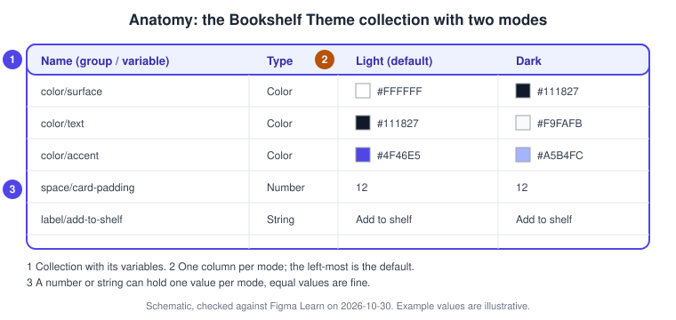
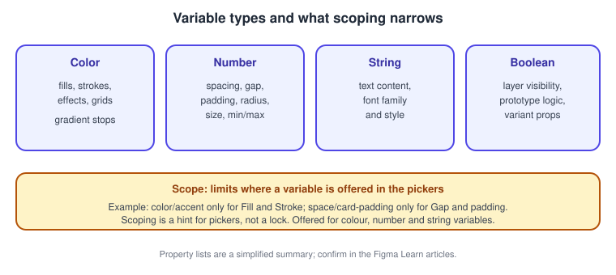
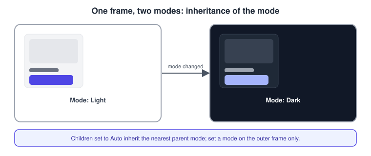
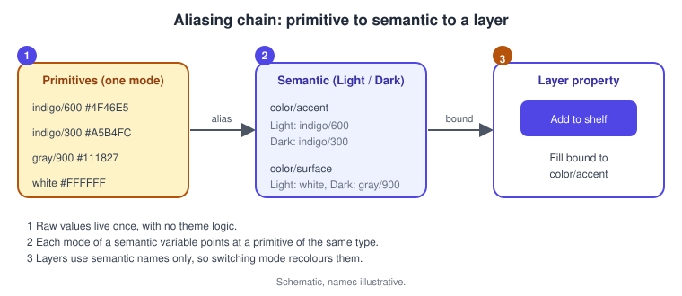
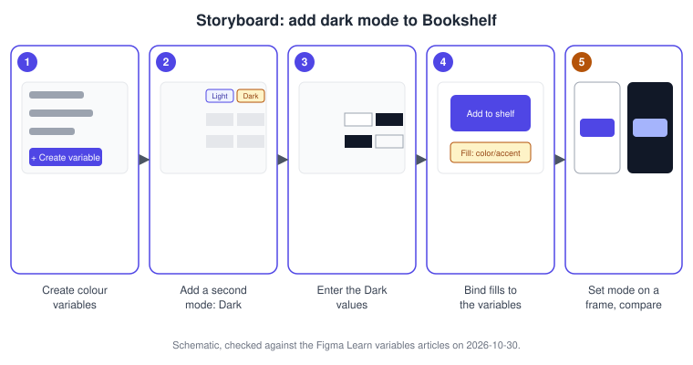

Variables, Collections and Modes
|
This content was generated with the assistance of AI and should be verified against the official documentation before being relied on in production. |
This page was written on 2026-10-30 against the UI3 interface of Figma Design. Variables have been generally available since 2024-04-16. Anyone with can-edit access to a file can create and manage its variables, which in practice means a Full seat, and anyone with access to the file can use them in designs. Using several modes in one collection, using variables in prototypes and publishing variables to a team library need an Education or a paid plan, and the number of modes per collection depends on the plan (see Plans, Seats and AI Credits). Extending a collection for multi-brand systems is described by Figma as an Enterprise feature, announced on 2025-11-20; check the plan page before relying on it. Source: Figma Learn: Guide to variables in Figma
The running example is the Bookshelf Design System. Instead of typing #4F46E5 on every button, the design stores it once as a variable, and a second column of values makes the same screens render in dark mode. Variables hold values; styles (see Styles) bundle several properties of one kind. How variables become named design tokens and travel to code is covered on Design Tokens, and their use in logic on Advanced Prototyping with Variables.
The model
-
A variable is a named value of one type: Color, Number, String or Boolean. Figma’s documentation describes variables for design properties and for prototyping actions. Figma Motion also uses variables for timing and easing (see Figma Motion).
-
A collection is a set of variables, with up to 5,000 variables per collection according to the help article. Collections are how a design system separates concerns, for example Primitives, Theme and Spacing.
-
A group organises variables inside a collection, using slashes in names (
color/surface) or the group commands. Groups can be nested. -
A mode is a column of values for the whole collection. Each mode stores one value per variable, the left-most column is the default mode, and a frame can pick a mode to render with.
-
An alias makes a variable’s value point at another variable of the same type instead of holding its own value.
-
Scoping limits where a variable is offered, and code syntax gives it a name per platform for Dev Mode.

Source: Figma Learn: Modes for variables

Where it lives in UI3 and the shortcuts
Open the Variables tab in the left navigation bar of the file (the bar was redesigned on 2026-01-07) to see the local collections and their variables in a table. Selecting a layer shows the variable picker next to its properties in the right sidebar, where you can bind a property to a variable or detach it. Modes are applied to a selection from the right sidebar.
| Action | macOS | Windows |
|---|---|---|
Duplicate selected variables |
Shift Enter |
Shift Enter |
Select several variables |
Command-click or Shift-click |
Ctrl-click or Shift-click |
Open the Actions menu |
Command K |
Ctrl K |
Other tasks use the right-click menu or the More options menu of the collection: create, rename, delete or reorder collections, create an alias, edit a variable, or make a group from the selection.
Variable types
-
Color variables hold a colour and are bound to fills, strokes, effects and similar properties. The help centre also lists using variables for gradient stops; the exact list of properties has changed over time, so check the article when you need a specific one.
-
Number variables hold spacing, gap, padding, radius, size and min and max values (see Auto Layout). They can also map to variant properties.
-
String variables hold text such as localised interface copy, and can drive text content and variant properties.
-
Boolean variables hold true or false. They are used mainly in prototypes and, according to the modes article, map to variant properties with true and false values rather than directly to boolean component properties (see Variants and Component Properties).
Source: Figma Learn: Modes for variables
Collections and groups
To create a collection, open the collection menu with More options and choose Create collection; the file needs at least one variable first. The same menu renames, deletes and reorders collections. Deleting a collection deletes its variables, and undo restores them right after. Inside a collection, click Create variable, choose a type, type the name and enter the value. Select several variables and use New group with selection to build a group; double-click a group name to rename it, right-click for Ungroup, Duplicate group or Delete group, and drag a group onto another to nest it.
A common structure for Bookshelf is three collections: Primitives (raw colours and spacing steps, one mode), Theme (semantic names with Light and Dark modes) and Density or Brand (modes for compact or alternative themes). Variables defined in a file are local; to share them, publish the library (see Libraries and Publishing). A variable can be hidden from publishing in the Edit variable dialog, which is how a primitive stays private to the library.
Modes
Modes let one variable carry several values for different contexts such as light and dark themes, brands, densities or languages, without duplicating frames. Add a mode by adding a value column; drag columns to reorder them or to change the default. Modes can be duplicated, and the modes article mentions importing and exporting modes as DTCG-formatted JSON. Mode support: Education, Professional, Organization and Enterprise plans can create and use modes, and the number allowed per collection depends on the plan. On Enterprise, a team can set a default mode when a collection has at least two modes.
You apply a mode from the right sidebar to a layer, frame, component, component set, section, group or page. Objects are set to Auto by default: they inherit the mode of the nearest parent that sets one, and use the collection’s default mode when no parent does. A page can switch modes only if a local collection has more than one mode.

Source: Figma Learn: Modes for variables
Aliasing
An alias lets one variable reference another of the same type. Right-click the value and choose Create alias, then search for the target variable, which can be in a library; hover over the value and choose Detach alias to turn it back into a raw value. The usual pattern is two tiers: primitives hold raw values (indigo/600), semantic variables alias them per mode (color/accent points at indigo/600 in Light and indigo/300 in Dark), and layers use only the semantic ones. Renaming or changing a primitive then updates everything that aliases it.

Scoping and code syntax
Scoping decides in which pickers a variable appears. Right-click one or more variables, choose Edit variable, open the Scope tab and tick the properties, or tick Show in all. Scoping is available for colour, number and string variables. Use it to stop a space/card-padding variable from showing up in colour fields. It narrows suggestions; it is not a security feature.
Code syntax gives a variable a name per platform (Web, Android, iOS), up to one per platform, so Dev Mode can show var(--color-accent) instead of a raw value. In the Edit variable dialog, open Code syntax, click Add code syntax, pick the platform and type the name; a preview is shown. Per the help article, Dev Mode snippets currently support CSS, SwiftUI and Compose (see Dev Mode). A web name for the accent colour could be:
:root {
--color-accent: #4F46E5;
}
[data-theme="dark"] {
--color-accent: #A5B4FC;
}
.add-to-shelf {
background: var(--color-accent);
}The CSS above is an illustration written for this page of how modes can map to a theme switch; it is not Figma output.
Binding variables to properties
Select a layer, open the variable picker next to a fill, stroke, gap, padding, radius or text property, and choose a variable; a bound property shows the variable name instead of a raw value. Detach it to return to a plain value. Variables can also be set on min and max sizes in auto layout, on text content, and on layer visibility with a boolean. Because a style can contain variables but a variable cannot contain a style, a colour style can reference a variable while the opposite is not possible (see Styles).
Extended collections
An extended collection builds on a parent collection, for example to create a second brand over the Bookshelf Theme: it inherits the parent’s variables and lets you override chosen values. Figma announced the feature for Enterprise on 2025-11-20. The exact options (what can be overridden, how updates of the parent propagate) are described in a help article that could not be re-read on the check date, so consult the Figma Learn article on extending collections or the release notes before use. Source: Figma release notes
Variables in Dev Mode and in the REST API
In Dev Mode, an inspected property can show its variable, with suggestions and the local collections table, according to the variables guide (see Dev Mode). The REST API can query, create, update and delete variables, the Plugin API can create and read them and bind them to components, and widgets can create and read them but cannot bind widget properties to them. See REST API and Webhooks. Source: Figma Learn: Guide to variables in Figma
Variables compared with styles
| Variables | Styles | |
|---|---|---|
Value kinds |
Colour, number, string, boolean |
Colour, text, effect, grid |
Several values |
Yes, one per mode |
No |
Aliasing |
Yes |
No |
Use in prototypes |
Yes |
No |
This summary is simplified from the guide; see Styles for when a style is still the better tool, and Design Systems for how both fit together. Source: Figma Learn: Guide to variables in Figma
Procedure: add dark mode to Bookshelf

-
Open the Bookshelf file and the Variables tab in the left navigation bar. Create a collection named Theme (panel 1).
-
Click Create variable, choose Color, and create
color/surface,color/textandcolor/accentwith Light values #FFFFFF, #111827 and #4F46E5. -
Add a second value column and name it Dark (panel 2). The left-most column, Light, stays the default mode.
-
Enter the Dark values #111827, #F9FAFB and #A5B4FC (panel 3).
-
Select the card frame, open the fill’s variable picker and choose
color/surface; do the same for the text and for the button fill withcolor/accent(panel 4). -
Duplicate the screen frame. Select the copy, open the mode setting in the right sidebar and choose Dark for Theme (panel 5). Leave the children on Auto so they inherit.
-
Optionally open Edit variable for
color/accent, set the Scope to fill and stroke, and add a Web code syntax such as--color-accent.
Source: Figma Learn: Modes for variables
Common mistakes
-
Binding layers directly to primitives, so a mode cannot change them. Bind layers to semantic variables.
-
Setting a mode on every child instead of on the outer frame, which defeats inheritance.
-
Aliasing across types: an alias target must be the same type.
-
Expecting modes on the free plan; check the plan limits first.
-
Treating scope as enforcement; a designer can still type a raw value.
-
Forgetting to republish the library after editing variables, so consumers keep the old values.
Where older guides are outdated
Guides written before 2024-04-16 predate variables and use styles for colour, spacing and themes; later books cover variables but show the old interface, with click paths that do not match UI3 (the only interface since 2025-04-30, with the left navigation bar redesigned on 2026-01-07). Older text also refers to editor and viewer seats, replaced by Full, Dev, Collab and View seats on 2025-03-11, and to plugins named Figma Tokens, which is now the third-party Tokens Studio plugin and an ecosystem tool rather than a Figma feature. Extended collections (2025-11-20) post-date the books. Source: Figma release notes